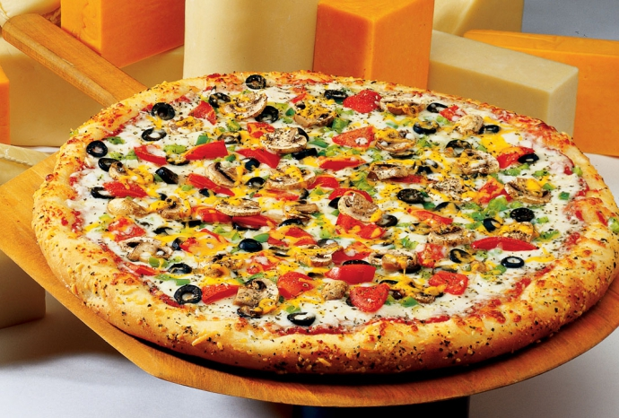

Пицата е любимо ястие на милиони хора по целия свят. По произход обаче принадлежи на италианците, затова тук ще намерите най-популярните рецепти на пици.
Тук ще намерите рецепти на:
Куатро Формаджи
Продукти:
Приготвяне :
От тестото се разточват блатове с големина според вкуса. Всеки блат се намазва добре с доматеното пюре, настъргва се кашкавал, добавя се топеното сирене, синьото сирене и моцарелата. Поръсва се с босилек и риган на вкус, слагат се 6-7 обезкостени и нарязани на ситно маслини. Пече се в предварително загрята фурна за около 10 минути.
Маргарита
Продукти:
Приготвяне :
Тестото се оставя да втаса на топло място. Доматите се нарязват на кръгчета и се поставят в купа. Чесънът се нарязва, размесвайки го с 1 с.л. зехтин и сол. Втасалото тесто се разточва върху набрашнения плот с помощта на точилка. Дебелината е около 1 см. Поставя се в намазана със зехтин тава и отгоре се нареждат доматите. Върху тях нарязан на филийки кашкавал и отгоре се поръсва с босилек. Пицата се пече за около 10-15 минути.
Капричоза
Продукти:
Приготвяне :
Тестото се разточва с дебелина 1 см. Намазва се със зехтин. Първо се нареждат нарязаните домати, а след това моцарелата, шунката, гъбите, артишокът. Най-накрая се слагат маслините. Пече се в предварително загрята фурна.
Калцоне
Продукти:
Приготвяне :
Оставяте тестото да втаса за около 1 час на стайна температура. Тестото е втасало, след като на пипане то остава вдлъбнато и лепкаво на допир. Разточвате топка тесто върху кухненския плод равномерно с точилка. Намазвате половината тесто с кетчуп, поръсвате отгоре нарязаните гъби, сирене, шунка, салам и поръсвате с риган. Ненамазаната половина от тестото се повдига и с нея се завива плънката, като се затваря плътно отвсякъде. Пече се на 200 градуса за около 15-20 минути.